这篇教程从 Abaqus 文件类型和 Cohesive 分析的基本概念讲起，依次记录模型导入、材料与网格设置、三种粘性分析方法、结果读取，以及 Python 和 Agent 辅助仿真的实践。
软件准备
关于软件——abaqus
Abaqus 是一款常用的有限元分析软件，主要用于结构、热传导、接触、非线性等工程仿真计算。它能够帮助用户建立模型、设置材料与边界条件，并对结果进行可视化分析，广泛应用于机械、土木、材料等领域。
安装软件建议参考b站安装教程：https://www.bilibili.com/video/BV1BJ4m1L797/?spm_id_from=333.337.search-card.all.click&vd_source=6ac2d6197167db64d6f37b6ed81e86b8
软件的上手很快，基本上跟着几个教程做一做就能弄懂个大概，推荐的入门教程：
小建议：软件初始的操作按键不太好用，可以在设置中把转动改成鼠标中键，移动改成Ctrl+中键（和solidworks一致）进软件的时候尽量不要挂梯子，似乎会影响获取许可证，成功进入后挂梯子不影响。
文件类型
abaqus的文件类型很多，但是最有用的只有几个。
首先是.cae文件，就是仿真的主体文件，
它保存了模型建立、材料参数、装配关系、分析步设置、网格划分以及后处理显示等内容。平时建模和修改模型时，最常接触的就是这种文件。
其次是 .inp 文件，也就是输入文件。它本质上是一个文本文件，记录了模型、材料、边界条件、载荷和计算控制等信息。Abaqus 在提交计算时会读取这类文件，因此它也是进行检查、修改参数以及批量计算时非常重要的文件。
还有 .odb 文件，即结果数据库文件。这个文件中保存了计算完成后的结果数据，比如位移、应力、应变等后处理信息。通常查看仿真结果时，主要就是打开 .odb 文件。
另外常见的还有 .jnl 文件，它是操作日志文件，会记录在 Abaqus/CAE 中的大部分操作过程。在出现误操作或需要回顾建模步骤时，这类文件有一定参考价值。
.msg、.dat、.sta 文件 也比较重要，它们主要用于查看计算过程和判断任务是否正常运行。
- .sta 文件通常用来快速查看计算进度；
- .msg 文件可以帮助排查求解过程中的报错和警告；
- .dat 文件则会保存一部分计算输出信息，便于检查分析结果和求解状态。
如果计算失败，最先查看的往往就是这些文件。
最后是 .log 文件，它主要记录程序运行时的一些基本信息，也可以在排查问题时作为辅助参考。
Cohesive工作介绍
Cohesive 是一种用于描述界面分层、开裂与损伤演化的分析方法，常用于研究材料或结构之间的粘接失效过程。 在仿真中，它可以模拟两个部件连接界面从初始粘结、受载损伤，到最终分离的全过程，因此在复合材料分层、胶层失效、界面断裂等问题中应用非常广泛。
Abaqus 在进行 Cohesive 分析时有较明显的优势。 首先，它能够方便地定义界面的刚度、损伤起始准则和损伤演化规律，适合建立较完整的界面失效模型。其次，Abaqus 同时支持 Cohesive 单元 和 基于表面的 Cohesive 接触 两种方式，建模选择比较灵活，能够适应不同类型的结构问题。除此之外，Abaqus 的后处理功能较强，能够直观查看界面应力、损伤变量以及裂纹扩展过程，便于分析结果和定位失效区域。对于复合材料、胶接结构以及层间损伤等问题，Abaqus 已经是较成熟且常用的分析平台。
正式教程
教程部分提到的内容是在cohesive分析中需要特别强调的内容，其他没提到的部分按abaqus的基本使用方法来。
导入部件（part）
在左侧模型树右键部件，选择导入
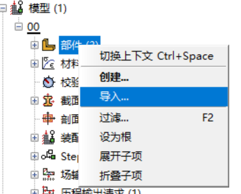
选择x_t类型文件，就可以导入来自solidworks的模型
属性与材料（section）
关于粘附力分析需要的参数有：
设置材料的界面如下：（有一些参数在设置时可能在某些子选项中，比如断裂能，粘性系数，要仔细寻找）
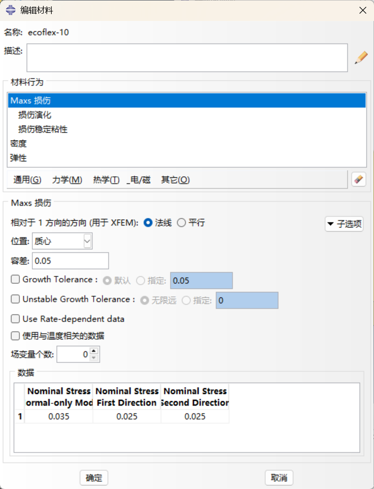
粘性损伤演化可以用不同种规则，比较常用的maxs最大名义应力准则，
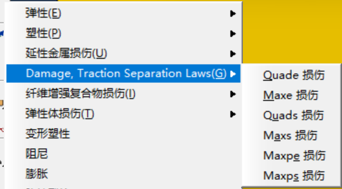
设置好材料参数后，创建截面，选择实体均质，用于粘性部分的截面要设置为粘性。
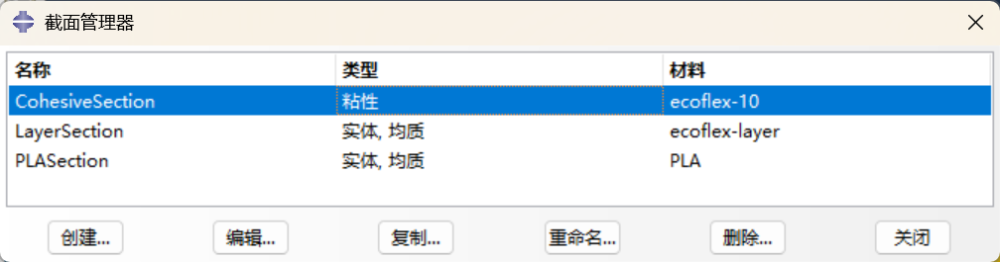
关于网格划分（mesh）
网格有三种，六面体四面体以及楔形，楔形我没怎么用过，这里不提及。
根据经验来看，做粘附力的有限元分析一定是六面体网格更好，也就是计算的准确性以及收敛的成功率都会更高。
但是对于稍微有点复杂的部件，划分出高质量的网格并不简单，
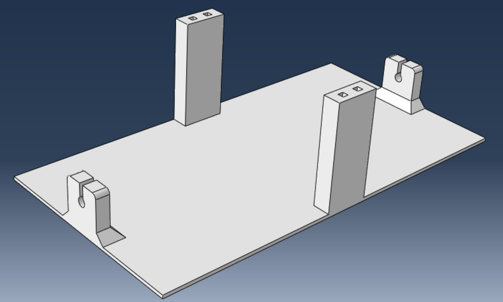
四面体网格
对于这样的部件，如果直接使用一键划分网格的功能，会提示：
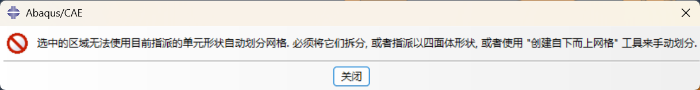
我们点击指派网格属性，选中这个部件，可以改为四面体网格,
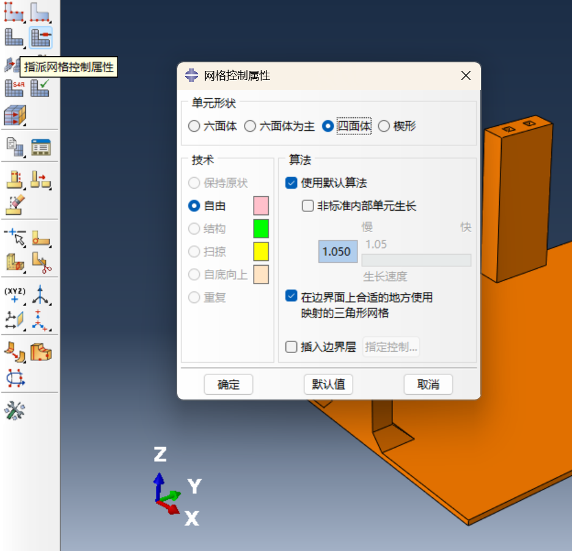
这样可以直接快速得到四面体网格，当然如此丑陋的网格非常容易在计算中出错，
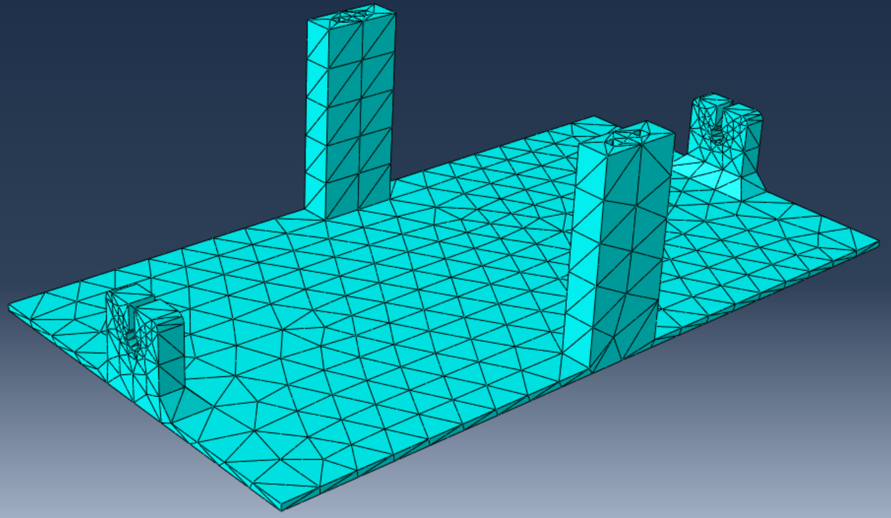
六面体网格
要划分相对高质量的网格，需要我们把部件进行适当简化与拆分，首先圆形孔对于底面的粘附力计算影响很小，直接简化掉，再利用切分功能，把部件沿着边线切成多个小部分：
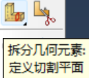
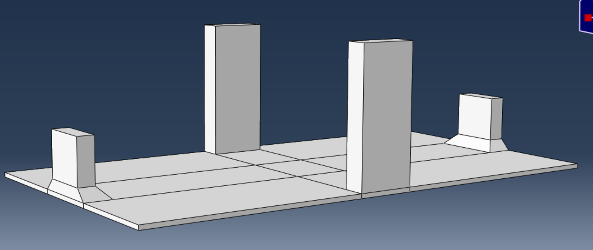
选择结构化的六面体网格就能绘制一个相对高质量的网格了（网格绘制还有扫掠等方法，但是学习成本有点高）
但是还要手动改一下播种（seed）的选项让网格更加利于我们的cohesive分析。
点击为边布种，
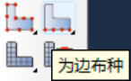
先选择底面的四个边，单元数可以设置为三或四，因为底面参与粘性力的计算，网格要密集一点：
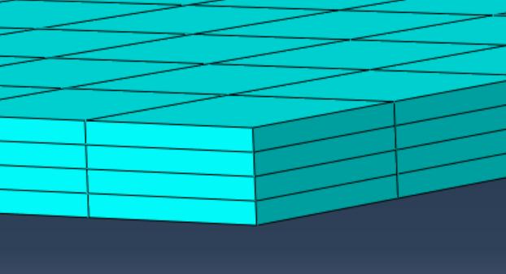
柱子边上的种子可以尽量靠近底部更密集（通过设置偏心率实现），因为越靠近底面应力越集中，种子多好计算：
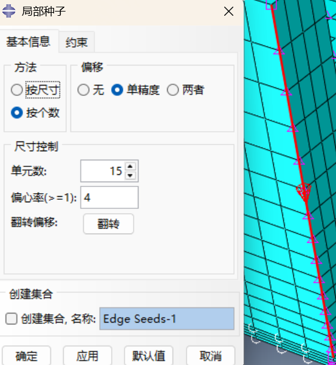
最终网格效果
通过这些设置终于得到了一个让人比较安心的网格：
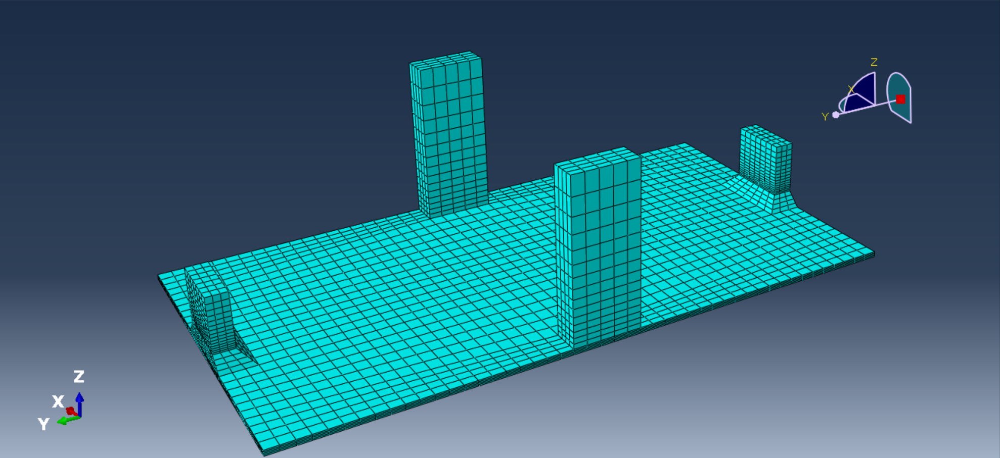
粘性分析的三种方法
Cohesive mesh
目前这种方法我使用的不多，只是作为一个参考思路。
赋予网格粘性，让连接处的网格承担粘附力的计算。在左边的工具栏里选择最下方的编辑网格，
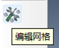
网格模块里有一个功能叫insert cohesive seams，
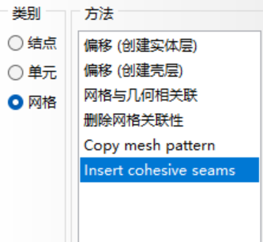
选择底面的网格，网格颜色有变化（或者出现了绿色的斑点）就是代表设置成功了。但是可以注意到这一步并没有让我们设置任何粘性参数，因为这里只是告诉软件我这一块网格将用来做粘性分析，具体的粘性参数还是要在属性里面设置。
回到属性模块，在创建截面中类型选择其他——粘性，
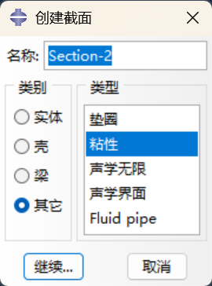
材料就选择设置好的粘性材料，响应选择牵引分离或连续体（根据工作的需要查询用哪一种更合适），平面外厚度是指参与计算的粘性层的厚度，也就是说虽然网格是没有厚度的，但是可以告诉它网格代表的粘性材料有多厚。
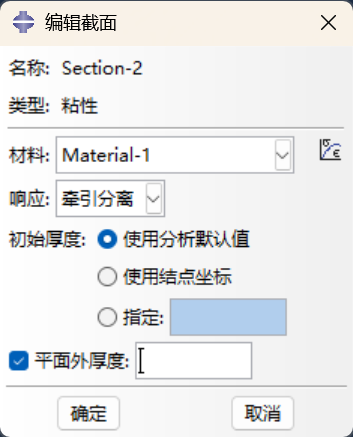
之后指派截面，给底面粘性网格指派，
这些准备完成后正常设置接触的相互作用，设置载荷就可以了。
Cohesive behavior
这种方法是把粘性赋予给接触作用。
进入相互作业板块（interaction），设置相互作用属性，
选择接触，然后在里面设置粘性面的相关参数，
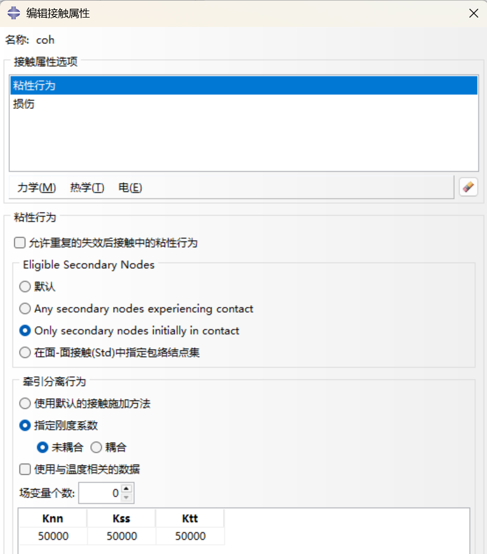
然后创建相互作用，选择主从表面，选择设置好的相互作用属性，
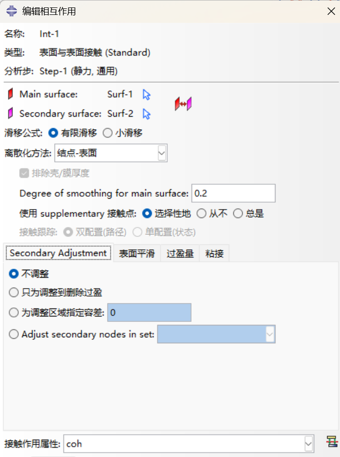
然后就可以进行计算了。这种方法相对简单，所以也具有独到的优势。
Cohesive element
这种方法最符合直觉，也就是设置一个长方体的部件，让这个部件充当粘性层。
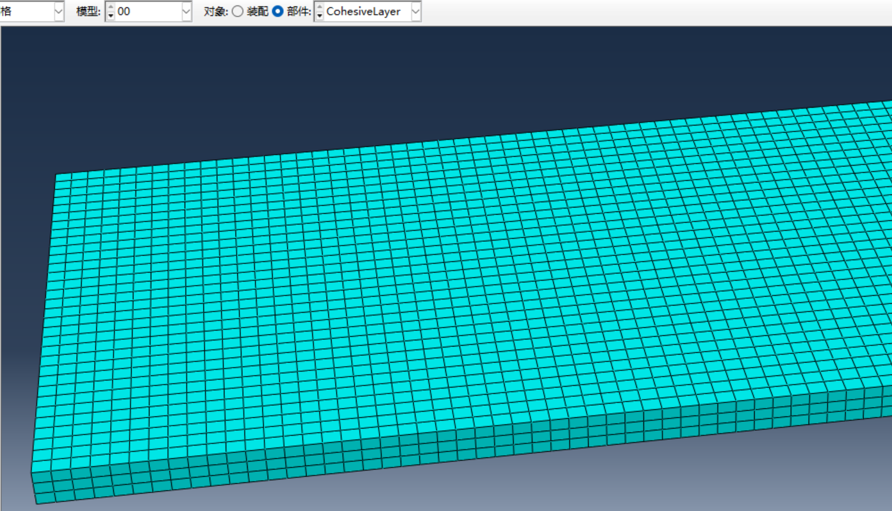
正常将粘性属性材料赋予即可，
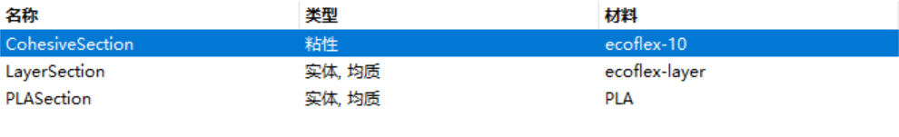
三种方法的总结对比
因为网格是有限元分析中用于计算的基本工具，或许赋予网格一些特殊属性会让计算更加困难，所以第一种方法是相对难利用的。第二种方法最便捷，由于更加简单，计算出完整结果的可能性更高，也更好用来做动画效果（可以得到完整的脱附过程的动画）；第三种方法相较于第二种难一点，更加利于进行粘性分析的各项参数的计算导出（粘性层就是一个实体部件，这样能清晰看到粘性层的云图）
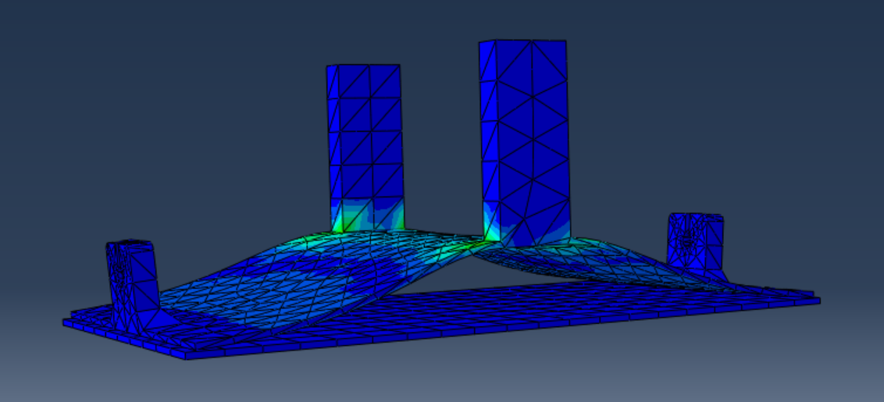
Cohesive behavior得到的脱附过程的优秀动画
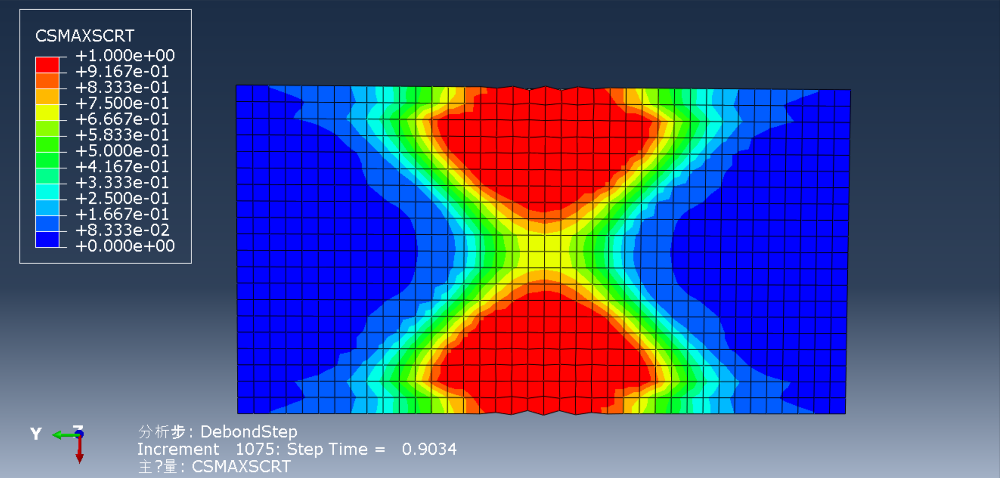
粘附层的csmaxscrt（最大名义应力损伤起始判据）云图
获得粘附力的方法
想测得粘性面被破坏过程中的粘附力，可以将载荷选为位移，场输出的反应力就是粘附力，而最大的应力（RF）也就是要求得的最大粘附力。
值得一提的是，在求解应力的计算中，越接近粘附力的峰值，每个增量的计算要花的时间越长，甚至计算实在过慢会导致Job中断，因此每次计算到难以收敛的step time时，如果每次结果的增长很慢，就可以停止工作，将当前最大输出量作为较可信的最大粘附力。
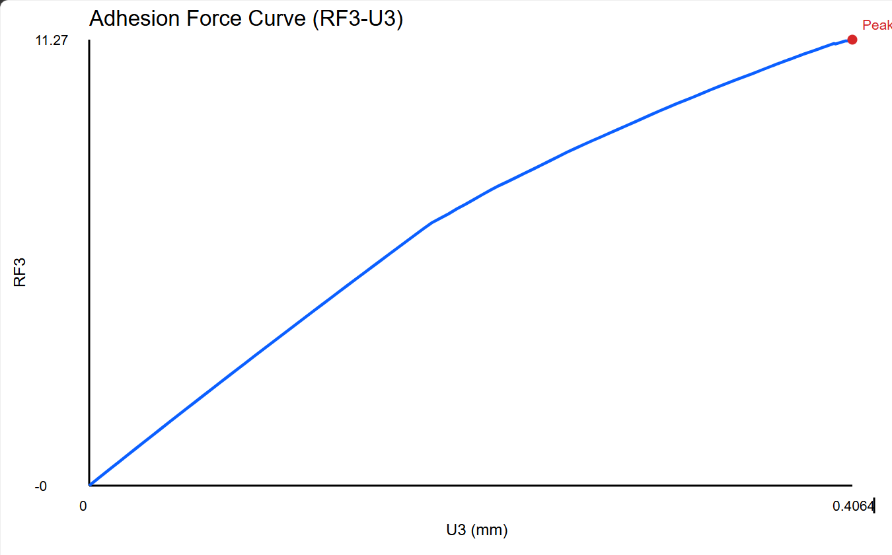
上表就是改变部件长度，保持宽度不变，测得不同组下的最大粘附力，可以看到，粘附力最大的组是len=29，单位粘附效果最好的组是len=24。
附加教程
做仿真并不是只能靠人在ui上点来点去，还有更加“未来”方法！
abaqus基于python的二次开发
在abaqus的默认工作目录下，有一个文件叫abaqus.rpy，它负责记录你每一步操作，格式自然是python。也就是说，每一步操作实际上都可以由python代码来实现。
有两种方法，第一种是在ui下方点出类似命令终端的输入区，在里面输入代码回车即可执行：
另一种方法是在电脑中创建一个文本文件，写好代码后保存为py格式，随后在ui左上角菜单栏点击文件，再点击运行脚本，选择对应的py文件：
这种方法很适合一系列需要修改某一参数得到多组数据的仿真工作，通过修改代码中的参数可以快速得到一组cae文件。当然上手难度比较高，对于只学了C语言的大一学生有点难。
利用agent协助CAE工作
既然能用代码解决，那自然能利用agent接入ai协助工作。（能用token解决的事都不叫事）
首先创建一个新的文件夹，把cae，odb等文件放入吗，然后把工作目录也改到这个文件夹中，方便ai读取你的工作日志。利用codex或claude code这样的agent，可以更加高效的进行仿真工作。
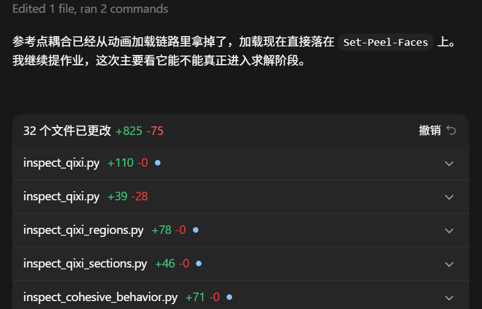
当然目前的ai只能做最基本的工作，前文提到的细致划分网格的类似方法它们还做不到，但是可以简化一些改参数的过程，相信随着各种工具的发展，传统的CAE工作模式也会改变。
将codex与abaqus完全打通
这个是我五一假期在b站上看到的一个比较新颖的应用，看起来效果非常不错，我还没有去尝试，先把效果图和教程链接贴在这里。
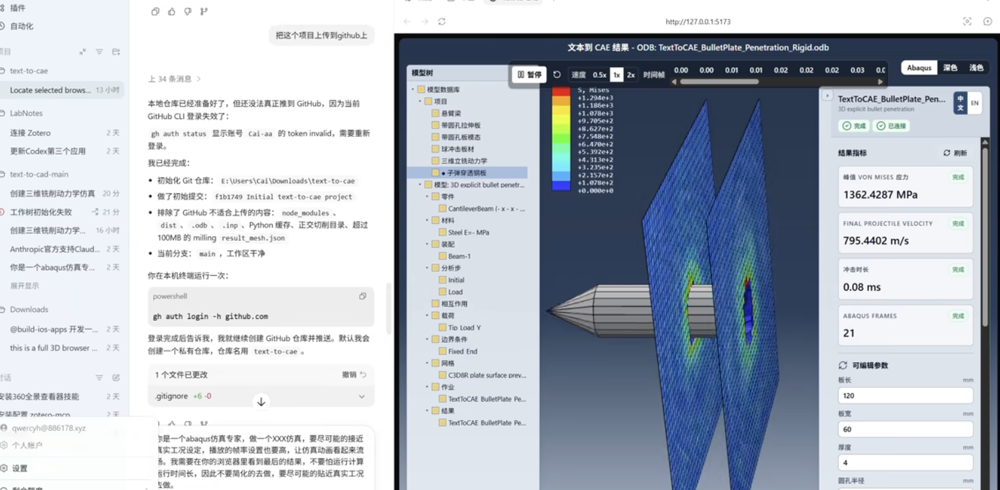
小结
abaqus中涉及到cohesive的知识很深，但是网上相关的教程并不多，b站上还有youtube上的相关教程也有点杂，涉及到的相关物理知识也比较难，所以目前阶段我们只能在最基本的层面利用软件进行些简单的cohesive分析，作为案例用来快速上手abaqus这类有限元分析软件也相当不错，得到的结果未必令人满意，但是随着时间推移，日后或许能在仿真上掌握的更深，做出效果更佳的成果。
易兴宇 ustc人形机器人研究院
飞书原文：https://ecnot8h4g2fc.feishu.cn/wiki/Zlhcw2yToixAX5klpytcPXNQnke?from=from_copylink